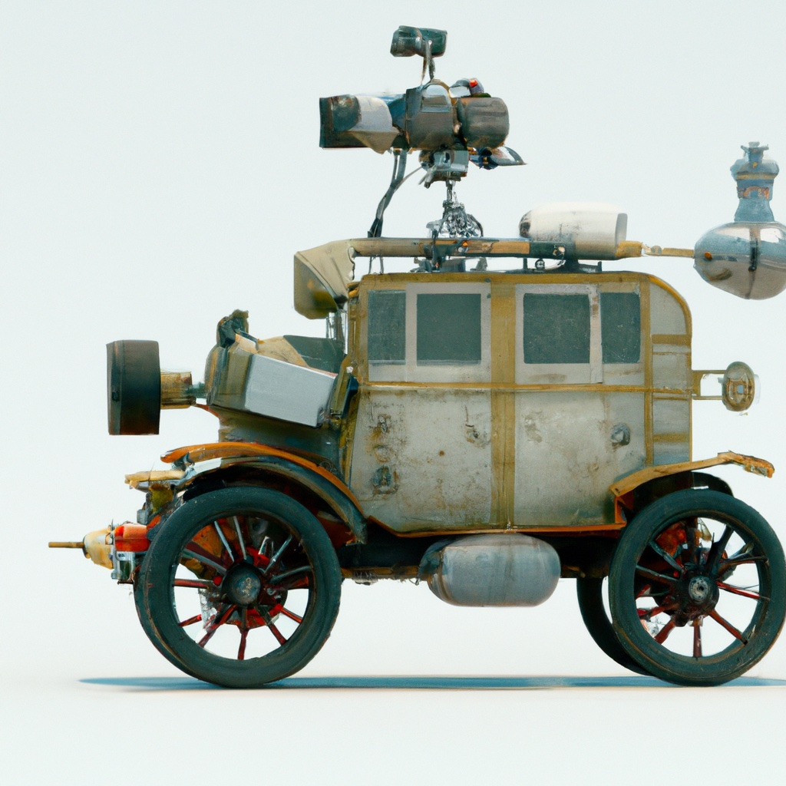

6.7. Chapter Summary#
{kind=link}
In Chapter 5, we turned our attention from probabilistic aspects of robotics to deterministic aspects of the problems of perception and planning. With respect to modeling, this mainly amounted to introducing the geometric aspects of motion and imaging. For reasoning, we introduced neural networks for computer vision tasks, and sampling-based algorithms for path planning.
In this chapter, we generalized geometric motion models, introduced new geometric sensing models, combined geometry and probabilistic methods to solve the SLAM problem, developed motion planning algorithms for cars, and extended deep learning to incorporate reinforcement learning.
6.7.1. Modeling#
To begin our foray into autonomous driving we introduced a configuration space that included both position and orientation information for a mobile robot moving in the plane. We did this by simply extending our coordinate representation of configuration from \(q = (x,y)\) for robots that translate in the plane, to \(q = (x,y,\theta)\), where \(\theta\) denotes the robot’s orientation. In a brief aside, we showed how to compute the position of any point on the robot, given its configuration. This computation essentially relied on basic trigonometry, and it was not immediately obvious how we might generalize our computations to robots that move freely in 3D. We dealt with this representation problem by introducing the special special orthogonal group, \(SO(2)\), to represent rotations, and the special Euclidean group, \(SE(2)\) to represent combined translation and rotation.
The matrices in \(SO(2)\) are called rotation matrices and they have several notable properties:
\(R\) is orthogonal (i.e., its columns are mutually orthogonal unit vectors)
\(R^{-1} = R^T\),
\(\det R = +1\).
The matrices in \(SE(2)\) are called homogeneous transformation matrices, and they include rotation information (encoded by a rotation matrix as the upper left sub-matrix), and translation information (encoded by the rightmost column). Thus, these matrices have the form
where the notation \(T^0_1\) indicates that this homogeneous transformation gives the position and orientation of coordinate frame 1 with respect to coordinate frame 0, and \(0_2\) denotes the row vector \([0~ 0]\).
Homogeneous transformation matrices can be used to compute coordinate transformations between various coordinate systems. For example, if we are given the coordinates of a point \(P\) with respect to frame 1 and we desire the coordinate representation with respect to frame 0, this can be determined using the matrix equation:
Finally, composition of homogeneous transformations requires nothing more than simple matrix multiplication. Given the transformations \(T^0_1\) and \(T^1_2\) (which denote the relative position and orientation of frame 1 with respect to frame 0, and of frame 2 with respect to frame 1, respectively), the position and orientation of frame 2 with respect to frame 0 is given by \(T^0_2 = T^0_1 T^1_2\).
Having developed homogeneous transformations to represent pose, we turned our attention to differential kinematics for a car-like robot. Previously we derived the relationship between wheel angular velocity and the resulting velocity (linear and angular) for a differential drive robot. For car-like systems, we prefer to compute the linear and angular velocities of the robot with respect to the world coordinate frame as a function of the rate of change in the steering angle and of the robot’s linear velocity (expressed in the body-attached frame). This is a more natural choice than using wheel speed, since the control input for a car-like robot is often specified as a rate of wheel rotation and a forward speed.
In Chapter 5 we introduced computer vision, and showed how stereo computer vision could be used to derive 3D coordinates for points in the scene. While computer vision has shown dramatic performance improvements in recent years, stereo vision is not reliable enough, fast enough, or dense enough for applications such as self-driving cars. In contrast, LIDAR uses laser light and time of flight computation to determine the distance to each point that is visible in the scene, facilitating real-time construction of point-cloud scene representations. Because LIDAR data is typically collected while the sensor is moving through the environment, it is necessary to map 3D point-cloud data into a common reference coordinate frame. Happily, homogeneous transformations are the perfect tool to accomplish this. LIDAR is currently the most popular and most reliable sensor being used for self-driving cars.
6.7.2. Reasoning#
In Chapter 4, we solved the localization problem for mobile robots equipped with a map of their environment. In this chapter, we considered the more difficult problem of building the map while simultaneously localizing the robot in that map, the SLAM problem.
To solve the SLAM problem, the robot collects sensor data as it moves through its environment, and then uses this data, along with the robot’s knowledge of its own motion, to incrementally build a map of the environment and to estimate the robot’s pose relative to this map. Doing this requires the ability to reconcile data acquired at different robot poses, i.e., solving the correspondence problem. We introduced the Iterative Closest Points algorithm (ICP) for this purpose, and showed how it can be applied to point-cloud data from a LIDAR sensor.
Once the correspondence problem has been solved, we can infer the relative pose transformations between successive robot poses, and these can be used as constraints in the pose optimization process. We introduced the PoseSLAM algorithm to achieve this. PoseSlam can be implemented as a nonlinear optimization using factor graphs, in which pose constraints correspond to the factors, and nodes correspond to the unknown poses.
In previous chapters, we have mainly considered robots that can move in any direction (even for the DDR, the robot can stop, turn in place, and set off again in any direction), and whose dynamics can safely be ignored for purposes of motion planing. Neither of these apply for the case of self-drivings cars, whose motions are subjected to nonholonomic constraints (when the wheels do not skid), and whose speed and acceleration are important factors for both safety and passenger comfort. Unfortunately, the introductions of nonholonomic constraints and the consideration of vehicle dynamics adds significant complexity to the motion planning problem.
To deal with these complexities, we introduced the idea of motion primitives, which can be thought of as local, parameterized motion plans. Parameterized motion primitives live in a low-dimensional space (they are completely defined by a small set of parameters), and the derivatives necessary to consider vehicle dynamics are readily available in closed form. Together, these two characteristics enable computationally tractable algorithms for motion planning.
We focused our attention on the particular case of splines as motion primitives, first developing the approach using general polynomials, and then specializing this to the case of polynomial splines defined by a set of via points (along with constraints on velocity and acceleration at those points). We then derived the equations necessary for motion planning using quintic splines (fifth order polynomial splines), since fifth order polynomials allow us to specify constraints on position, velocity, acceleration, and jerk.
After developing the framework for motion planning using quintic splines, we presented a method for tracking these nonlinear trajectories. The method decomposes the state error into components parallel to the axes of a Frenet frame that moves along with the desired trajectory, and constructs a local recovery trajectory to bring the vehicle to the desired trajectory. We showed how this approach could be incorporated into an optimization framework that minimizes total jerk throughout the motion, since it has been shown that human passengers are sensitive to jerk in the lateral direction.
In Chapter 3, we introduced reinforcement learning, including policy optimization (using value iteration and policy iteration) and Q-learning. Then, in Chapter 5, we introduced deep learning to solve computer vision problems. In this chapter, we combine the two, and introduce Deep Reinforcement Learning, or Deep RL.
We first descriped how Q-learning can be implemented using a deep neural network to encode the Q-function. With this approach, the system learns the Q-values associated to a given problem, and these are encoded in a deep Q-network (DQN).
We then described an approach to policy optimization in which a deep network encodes a stochastic policy \(\pi(a | x, \theta)\) (i.e., \(\pi\) is a probability distribution over actions, given the current state and parameter \(\theta\)). The parameter \(\theta\) can be estimated using a simple hill climing algorithm, where the loss function to be optimized is computed using fininte horizon rollouts.
Finally, we gave a brief introduction to policy gradient methods, in which simple hill climbing is replaced by a gradient descent on the loss function, using the same finite-horizon rollout loss function that was used for policy optimization.
6.7.3. Background and History#
Representing the pose of an object is a fundamental topic in robotics, and therefore good introductions to this material can be found in most introductory robotics text books, including [Choset et al., 2005, Lynch and Park, 2017, Siegwart et al., 2011, Spong et al., 2006].
The kinematics of car-like robots, including Ackermann steering is covered in [Siegwart et al., 2011], along with a good introduction to LIDAR.
SLAM has been a topic of robotics research since the 1990’s, and the number of important papers in the area are too numerous to mention here, so we focus on the two main methods that were specifically addressed in this chapter. The seminal reference for the ICP algorithm is due to Besl and Jain [Besl and McKay, 1992]. Pose SLAM was introduced by Ila et al. [2010].
Splines have been used in robotics for many years, mainly to plan trajectories for robot arms specified in terms of via points in the joint space (see, e.g., [Spong et al., 2006]). Quintic splines have been proposed for lane changing maneuvers by self-driving cars in [Li et al., 2020] and the method we describe for tracking nonlinear trajectories by planning with respect to a local Frenet frame was introduced in [Werling et al., 2010].
While the topic of Deep RL has been around for quite a while, an excellent introduction can be found in a more recent articles by François-Lavet, et al. [François-Lavet et al., 2018]. DQN, as discussed, was introduced by Mnih et al. [2015], and policy gradient algorithms were introduced by Williams [1992] and PPO is described in [Schulman et al., 2017].